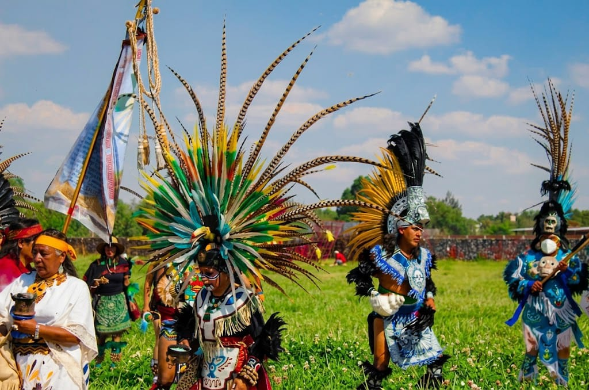

EDU
EducacionBecas y talleres
Materiales, actividades, recorridos y espacios de aprendizaje.
Donativo y apoyo
La seccion de donativo debe explicar con claridad que se apoya: educacion cultural, salud comunitaria, arte, patrimonio, memoria territorial y continuidad de actividades.
Ver formas de apoyar
Mensaje principal
El informe senala que falta informacion publica comparable sobre impacto financiero en Mexico. Por eso, la web debe ser transparente: explicar proyectos, necesidades, resultados esperados y aliados.
El llamado a la accion debe ser emotivo, pero no exagerado: menos folclor, mas territorio, aprendizaje, salud, arte y continuidad comunitaria.
Dona ahora ->Materiales, actividades, recorridos y espacios de aprendizaje.
Apoyo a herbolaria, encuentros comunitarios y saberes locales.
Exposiciones, documentacion, fotografia, literatura y audiovisual.
Contenido basado en el informe analitico.
Texto de apoyo para revisar jerarquia, ritmo y lectura.
Dato contextual extraido del informe.
Dato contextual del informe.
Evidencia documental por integrar.
Desarrollo ampliado para explicar contexto, territorio, programa, publico beneficiado y evidencia visual sugerida.
Este bloque sirve para probar una version final con lectura continua, imagenes documentales y jerarquia editorial.